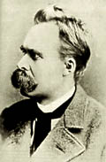
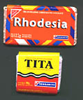

Curioso (y triste) que tantos adultos crean tener "opiniones".
Curioso (y triste) que tantos adultos quieran tenerlas, y las aprecien tantísimo, como su mejor tesoro...
-
Cuando el niño era niño
no tenía opinión sobre nada
no tenía ninguna costumbre,
se sentaba en cuclillas,
tenía un remolino en el cabello
y no ponía caras cuando lo fotografiaban
... [*]
Creo que ese fue el verso que -mirando la película- más me impresionó;
me conmovió, y me costaría explicar por qué...
Quizás ayude mirar al prójimo... darse cuenta de que, bien mirado,
las "opiniones" de una persona jamás forman parte de su "yo amable".
Ninguna persona es querible (pienso ahora en "Historias mínimas",
... y en cualquier novela o historia, con sus personajes queribles)
por sus opiniones; las opiniones, sean geniales o idiotas, acertadas
o erróneas, no embellecen a nadie...
En lo eterno, en lo esencial, a quién (a mí, al ángel de la guarda, a Dios)
puede importarle las "opiniones" de un hombre de verdad ?
Las "opiniones de un santo"... ya la misma expresión suena ridícula,
casi un oximoron.
Si no recuerdo mal, Leon Bloy contestaba a uno de esos periodistas
que le preguntaba sus opiniones sobre no sé que tema:
"Lo siento, señor: yo no tengo opiniones".
Acaso no tenga mucho que ver.
También, leía hace poco, los filósofos griegos antiguos ponían a la opinión como
lo contrario de la sabiduría.
Acaso esto tampoco tenga mucho que ver.
Pero acaso, en el fondo, sí.
Vos que opinás?
-
El rezo del Rosario: 31 días, 31 maneras -
Número 23
( por John Da Fiesole de Disputations; adaptación y traducción libre )
Hay ciertas propiedades o aspectos del ser, que todos los seres particulares -rocas, hombres, poemas- comparten; estas categorías que trascienden todas las modalidades del ser, se llaman "trascendentales". Hoy en día, los trascendentales más conocidos son : Verdad, Bondad y Belleza.
A esta altura, no es difícil imaginar el rezo de un "Rosario Trascendental".
Dedicamos los cuatro primeros Ave Marías a la meditación habitual, y después
dedicamos cada par a meditar la relación del misterio con la bondad, la verdad
y la belleza.
Algunos misterios parecen tener un trascendental propio. No es muy fácil apreciar qué hay de bueno o de verdadero en los azotes de Jesús en la columna... a lo sumo, podemos pensar la "verdad" de que sus llagas son nuestra salud... La mayoría de los misterios específicamente marianos, sobre todo la Asunción, resultan más bien "deleitables" que "apetecibles", y por lo tanto tienden a contemplarse bajo el aspecto de Belleza más que de Bien.
Y sin embargo, los trascendentales están todos presentes en cada misterio.
Hasta la Crucifixión fue grata -en otras palabras, bella- al Padre.
Pero, si la Cruz nos parece demasiado horrible para ser "bella",
por el contrario la Resurreción y la Ascención nos parecen
demasiado bellas para esta vida. Es de notar que
María Magdalena se ve impulsada a aferrarse al Señor Resucitado,
para mantenerlo a su alcance, pero El le insiste en que lo deje ir.
Más adelante, después de que Jesús ha ascendido al cielo,
los Apóstoles se quedan mirando para arriba... al punto que deben
venir ángeles para apartarles la vista del cielo; todavía no
-parecen decir- la belleza perfecta de la visión
debe esperar aún (pronto, sin embargo, esa visión le será
concedida a San Esteban, antes de su martirio).
El milagro de Caná, acaso el rasgo más "pródigo" de Jesús, es un signo de la bondad gratuita de Dios para con aquellos que no la merecen; es también signo de la presencia de Dios, de que lo que Jesús dice (y su Madre) es verdadero; y por supuesto, es pura y simple belleza: montones de vino fino, expresamente regalado a los invitados a la fiesta.
En la transfiguración, cuando Pedro pierde la cabeza ante la belleza del Señor que se manifiesta como el cumplimiento verdadero de la Ley y los Profetas, sólo puede balbucir: "Qué bueno es para nosotros estar acá!".
Bien es aquello que apetecemos; Belleza es aquello
que nos place; Verdad es la conformidad entre lo que
está en nuestra mente y lo que es.
Por eso, el rezo del Rosario no puede cansarnos,
porque cada misterio nos pone en contacto con estas
tres cosas, que nos llenan y nos dirigen hacia
aquello a que estamos destinados a convertirnos.
Número 24
En el siglo XV, el moje cartujo
Domingo de Prusia
predicó
una forma del Rosario en que a cada Ave (que por entonces
sólo llegaba a la palabra "Jesús") se agregaba una
cláusula o frase de remate, para meditar en algún aspecto de la
vida de Jesús y de María.
Esta costumbre ha sobrevivido, y se puede observar de un par de maneras diferentes:
La forma más complicada es tener una frase distinta para cada Ave María. Claro que esto requiere un memoria fenomenal, o al menos la ayuda de un texto. El libro que recomiendo, una vez más, es "Through the Rosary with Fra Angelico", que contiene 150 frases extraídas de las obras del gran apóstol del Rosario, San Luis Grignon de Monfort.
La forma más simple es usar una sola frase, insertada en el medio del Ave María, para cada década. Una posibilidad es la siguiente:
-
Misterios Gozosos
Jesús, al que tú, oh Virgen, concebiste del Espíritu Santo
Jesús, al que tú, oh Virgen, llevaste a Isabel
Jesús, que de tí, oh Virgen, nació
Jesús, al que tú, oh Virgen, presentaste en el templo
Jesús, al que tú, oh Virgen, encontraste en el templo
Misterios de Luz
Jesús, que fue bautizado por Juan en el Jordán
Jesús, que transformó el agua en vino en Caná
Jesús, que predicó la llegada del Reino
Jesús, que se trasfiguró en el monte
Jesús, que se ofreció como sacrificio en la última cena
Misterios Dolorosos
Jesús, que sudó sangre por nosotros
Jesús, que fue azotado por nosotros
Jesús, que fue coronado de espinas por nosotros
Jesús, que cargó el peso de la cruz por nosotros
Jesús, que fue crucificado por nosotros
Misterios Gloriosos
Jesús, que resucitó de entre los muertos
Jesús, que ascendió al cielo
Jesús, que nos envió al Espíritu Santo
Jesús, que te asumió, oh Virgen, al cielo
Jesús, que te coronó, oh Virgen, en el cielo
El uso de estas frases adicionales ayuda a mantenernos concentrados en cada misterio y a conducirnos en la sucesión progresiva de eventos del Rosario. Al mismo tiempo, el rezo se enriquece como una letanía de alabanzas a Jesús y María.
(contribuye en esta entrega nuestro invitado Eugenio Pacelli)
... vano será, ciertamente, empeñarse en buscar remedios a la continua decadencia de la vida pública, si la familia -principio y fundamento de toda la humana sociedad- no se ajusta diligentemente a la norma del Evangelio.
El rezo del santo Rosario en familia es un medio muy apto para conseguir un fin tan arduo. ¡Qué espectáculo tan conmovedor y tan grato a Dios cuando, al llegar la noche, todo el hogar cristiano resuena con las repetidas alabanzas en honor de la augusta Reina del Cielo! Entonces el rosario, recitado en común, ante la imagen de la Virgen, reúne con admirable concordia de ánimos a los padres y a los hijos que vuelven del trabajo diario; además, los une piadosamente con los ausentes y con los difuntos; finalmente, liga a todos más estrechamente con el suavísimo vínculo del amor a la Virgen Santísima, la cual, como amantísima Madre rodeada por sus hijos, escuchará benigna, concediendo con abundancia los bienes de la unidad y de la paz doméstica.
Así es como el hogar de la familia cristiana, ajustada al modelo de la de Nazaret, se convertirá en una terrenal morada de santidad y casi en un templo, donde el santo rosario no sólo será la peculiar oración que todos los días se eleve hacia el cielo en olor de suavidad, sino que también llegará a ser la más eficaz escuela de la vida y de las virtudes cristianas. En efecto: la contemplación de los divinos misterios de la Redención será causa de que los mayores, al considerar los fúlgidos ejemplos de Jesús y de María, se acostumbren a imitarlos cotidianamente, recibiendo de ellos el consuelo en la adversidad y en las dificultades, y de que, movidos por ello, se sientan atraídos a aquellos tesoros celestiales que no roban los ladrones ni roe la polilla; y de tal modo grabará en las mentes de los pequeños las principales verdades de la fe que en sus almas inocentes florecerá espontáneamente el amor hacia el benignísimo Redentor, cuando, al reverenciar -siguiendo el ejemplo de sus padres- a la majestad de Dios, ya desde su más tierna edad aprendan el gran valor que junto al trono del Señor tienen las oraciones recitadas en común.
[Nota del editor: Acaso cinco décadas resulten demasiado para el rezo
de la familia, sobre todo si no se tiene el hábito de la oración en común;
en ese caso, una década por noche, siguiendo los Gozos de María
de la Corona Franciscana , comenzando el lunes
con la Anunciación, puede resultar una forma más práctica
de obtener las gracias que menciona arriba el Papa Pío XII]
- ...
Que durante algunas décadas del siglo XX el superhombre nietzscheano haya sido identificado con la bestia rubia de ojos azules del nazismo es una desagradable contingencia, un desvío de la senda humanista que el hombre humano emprendió desde el Renacimiento.
 El superhombre, el hombre que finalmente quiere ser sí mismo, está mejor representado por el artista-ingeniero-científico del Renacimiento, por la voluntad racional kantiana por la cual el sujeto se dicta su propia ley, por el revolucionario burgués que emprende el proceso histórico de su autodeterminación, por el sujeto social que se emancipa de la casta sacerdotal y derriba las estatuas de Dios, por el hombre nuevo del Che, por las nuevas mujeres que se proclaman propietarias de su cuerpo, por el primer astronauta que llega a la luna y con un pequeño paso suyo declara abolido el cielo, por los pensadores y pensadoras que terminan por disolver los últimos restos de la verdad....
¿Te parece que el superhombre también está representado por el científico americano que en la década del 60 afirma que el hombre va a ser el único animal capaz de dirigir su propia evolución?
¿Es que hay otra frase que exprese con más pureza y concisión el espíritu nietzscheano con el que vos y yo simpatizamos? Nietzsche entonces no sería sino el más radical de los iluministas, el más progresista de los revolucionarios, el que tras constatar que "el hombre hace a la religión y no la religión hace al hombre" instaura con su Zaratustra la religión del hombre para el hombre. ....
Oscar Cuervo, fragmento de artículo aparecido en la revista "Parte de Guerra".
Bueno ... bueno... va queriendo... me faltan algunos toquecitos (el día de semana en la fecha, y alguna otra nimiedad) pero ya prácticamente está.
Hasta logré la pequeña hazaña de hacer que los permalinks viejos de Blogger sigan andando... para lo cual tuve que hacerme un plugin en Perl ! (qué grosso!); en mi caso, esto es un esfuerzo bastante inútil, ya que este weblog tiene muy pocos links externos a posts individuales, pero me saqué el gusto... Si alguno está queriendo migrar de Blogger y quiere el plugin + instrucciones, pídamelo.
Empiezo a entender por qué MovableType tiene tan buena fama....
Demasiado por hoy. Mañana sigo.
Hola, hola.... probando , probando ...
(estoy pasándome al MovableType ... vamos a ver si me animo...)
A modo de recordatorio para mí; probable material para probables próximos posts:
1 de noviembre. Fiesta de todos los santos.
-
Celebramos hoy la solemnidad de Todos los Santos.
En la luz de Dios recordamos a todos los que han dado testimonio
de Cristo durante su vida terrena, esforzándose por poner en práctica sus enseñanzas.
Nos alegramos con estos hermanos y hermanas nuestros que nos han precedido,
recorriendo nuestro mismo camino, y que ahora, en la gloria del cielo, gozan del premio merecido.
Estos son los que, según la expresión del Apocalipsis, "vienen de la gran tribulación: han lavado y blanqueado sus vestiduras en la sangre del Cordero" (Ap 7, 14). Han sabido ir contra corriente, acogiendo el "sermón de la montaña" como norma inspiradora de su vida: pobreza de espíritu y sencillez de vida; mansedumbre y no violencia; arrepentimiento de los pecados propios y expiación de los ajenos; hambre y sed de justicia; misericordia y compasión; pureza de corazón; compromiso en favor de la paz; y sacrificio por la justicia.
Todo cristiano está llamado a la santidad, es decir, a vivir las bienaventuranzas. Como ejemplo para todos, la Iglesia indica a los hermanos y hermanas que se han distinguido en las virtudes y han sido instrumentos de la gracia divina. Hoy los celebramos a todos juntos, para que con su ayuda crezcamos en el amor a Dios y seamos "sal de la tierra y luz del mundo" .
La comunión de los santos supera el umbral de la muerte.
Es una comunión que tiene su centro en Dios, el Dios de los vivos.
"Dichosos los muertos que mueren en el Señor", leemos en el libro del Apocalipsis.
Precisamente la fiesta de Todos los Santos ilumina el significado de la
conmemoración de Todos los fieles difuntos, que celebraremos mañana.
Esta es una jornada de oración y de profunda reflexión sobre el misterio de la vida y la muerte.
"Dios no hizo la muerte" -afirma la Escritura-, sino que "todo lo creó para que subsistiera" (Sb 1, 13-14).
"La muerte entró en el mundo por la envidia del diablo, y la experimentan los que le pertenecen" (Sb 2, 24).
El Evangelio revela cómo Jesucristo tenía un poder absoluto sobre la muerte física, que consideraba casi como un sueño (cf. Mt 9, 24-25; Lc 7, 14-15; Jn 11, 11). Jesús sugiere que hay que tener miedo de otra muerte: la del alma, que a causa del pecado pierde la vida divina de la gracia, quedando excluida definitivamente de la vida y de la felicidad.
Por el contrario, Dios quiere que todos los hombres se salven.
Por eso envió a la tierra a su Hijo, para que todos los hombres tengan vida "en abundancia".
El Padre celestial no se resigna a perder a ninguno de sus hijos, sino que quiere que
todos estén con él, y sean santos e inmaculados en el amor.
Santos e inmaculados como la Virgen María, modelo eminente de la humanidad nueva. Su felicidad es plena, en la gloria de Dios. En ella resplandece la meta a la que todos tendemos. A ella le encomendamos a nuestros hermanos difuntos, en espera de encontrarnos con ellos, en la casa del Padre.
S.S. Juan Pablo II, Angelus del 1 de noviembre de 2001
-
El rezo del Rosario: 31 días, 31 maneras -
Número 22
- La agonía en el Huerto: Jesús, en cuanto hombre, quiere que el cáliz le sea evitado. Pero la voluntad del Padre es otra.
- Los azotes a la columna: Pilato hace azotar a Jesús para aplacar a los líderes judíos. Ellos, sin embargo, insisten en hacerlo crucificar.
- La coronación de espinas: El Rey de Reyes no reclama su reino. Los soldados, en cambio, insisten en "honrarlo", para su propia diversión.
- Cargando la cruz: Simón de Cirene sólo quiere ocuparse de sus cosas. Los soldados quieren que los ayude a ocuparse de los asuntos de ellos.
- La crucifixión y muerte: Los judíos y los romanos quieren que este día -y esta cruz- termine para siempre con este Jesús de Nazareth. Para Jesús, en cambio, este día -y esta Cruz- es la fundación de su Reino.
- La resurrección: Las mujeres quieren preparar el cuerpo de Jesus; Jesús lo impide. (o también: María Magdalena quiere retenerlo; Jesús le dice que lo deje ir)
- La Ascensión: Los apóstoles quieren que Jesús restaure el Reino de Israel; Jesús quiere retornar al Padre.
- La venida del Espíritu Santo: Los apóstoles quieren mantener el "perfil bajo". El Espíritu Santo que Jesús les envía los impulsa a proclamar su Nombre.
- La Asunción: Los deudos de María quieren sepultarla en la tierra; el hijo de María la asume a los cielos.
- La Corononación: María sólo quiere ser la esclava del Señor; el Señor la corona como Reina.
( por John Da Fiesole de Disputations; adaptación y traducción libre )
Existe un método tradicional para armar la trama de una historia: creamos un protagonista, y le asignamos un objetivo; creamos un rival, y le asignamos otro objetivo que se opone al anterior. La trama consiste en el desarrollo del conflicto y su resolución.
Esto sugiere la idea de un Rosario Dramático -por decirlo de alguna manera- donde cada misterio se coonsidera bajo el signo de un protagonista y un antagonista con objetivos encontrados.
Uno puede elegir de distintas maneras los roles y los objetivos; por ejemplo, con los Misterios Dolorosos:
De paso, podemos encontrar algo interesante en los Misterios Gloriosos: nosotros usamos el rosario para meditar sobre Cristo, pero veamos cómo podemos hacer de El "el antagonista" de la historia:
Lindo weblog también es el de Karen Marie Knapp, de Milwaukee: From the Anchor Hold.
-
...Creo que en todos quizá, pero especialmente en aquellos a quienes ha marcado la
desdicha, y sobre todo si ésta es biológica, la raíz del mal es la fantasía. Ése
es el único consuelo, la única riqueza de los desdichados, el único socorro para
soportar el espantoso peso del tiempo; un socorro bien inocente; indispensable, por
otra parte. ¿Cómo sería posible pasarse sin él? No tiene más que un
inconveniente: que no es real. Renunciar a ello por amor a la verdad es,
ciertamente, abandonar todos los bienes por locura de amor y seguir a aquel que
es la Verdad en persona. Y esto es verdaderamente llevar la cruz. El tiempo es la cruz.
No hay que hacerlo en tanto el instante límite no esté próximo, pero hay que reconocer la fantasía por lo que es; no olvidar ni por un instante, mientras se mantiene, que en todas sus formas, desde las más aparentemente inofensivas por su puerilidad hasta las más respetables por su seriedad y su posible relación con el arte, el amor o la amistad (y para muchos con la religión), en todas sus formas sin excepción, la fantasía es la mentira. Excluye el amor. El amor es real.
... Estoy convencida de que la desdicha, por una parte, y la alegría como adhesión total y pura a la perfecta belleza, por otra, implicando ambas la pérdida de la existencia personal, son las dos únicas claves por las que se entra en el país puro, en el país respirable, en el país de lo real.
Simone Weil (de una carta a Joë Bousquet)
Dos películas muy interesantes que vi el fin de semana: PickPocket (El Carterista), de R. Bresson y Las Alas del Deseo, de Wim Wenders.
La primera, una francesa vieja (blanco y negro), en ese estilo seco y minimalista de Bresson; es una especie de versión muy libre de Crimen y Castigo de Dostoyevsky (Bresson y Dostoyevsky son de esos "artistas hermanos"). Impresionante, aun para uno que no tiene mucha sensibilidad cinematográfica.
La de Wenders, en sus tiempos no me había caído del todo bien (sobre todo después de París, Texas), por ciertas objeciones "filosóficas" a ciertas "tesis" o a ciertas pretensiones ... pero igual tenía ganas de verla de nuevo; y, después de tantos años, me gustó mucho más que entonces (algunas objeciones sobreviven, pero apagadas). Después trataré de comentar algo más .... Vaya mientras tanto esta poesía que es como el fondo de la película:
caminada balanceando los brazos,
quería que el arroyo fuera un río,
que el río fuera un torrente
y que este charco fuera el mar.
Cuando el niño era niño
no sabía que era niño,
para él todo estaba vivo
y todas las almas eran una.
Cuando el niño era niño
no tenía opinión sobre nada,
no tenía ninguna costumbre,
se sentaba en cuclillas,
tenía un remolino en el cabello
y no ponía caras cuando lo fotografiaban.
Cuando el niño era niño era el tiempo de preguntas como:
"¿Por qué yo soy yo y por qué no tú?
¿Por qué estoy aquí y por qué no allí?
¿Cundo empezó el tiempo y dónde termina el espacio?
¿Acaso la vida bajo el sol no es sólo un sueño?
Lo que veo y oigo y huelo,
¿no es sólo la apariencia de un mundo ante el mundo?
¿Existe de verdad el mal y hombres verdaderamente malos?
¿Cómo puede ser que yo, el que soy,
no existiera antes de devenir,
y que un día yo, el que yo soy,
no seré más ese que soy?"
Cuando el niño era niño
las manzanas y el pan le bastaban como alimento;
y todavía es así.
Cuando el niño era niño
las bayas le caían en la mano como sólo caen las bayas;
y todavía es así.
Las nueces frescas le ponían áspera la lengua,
y todavía es así;
por encima de cada montaña anhelaba una montaña más alta
y en cada ciudad anhelaba una ciudad aún más grande,
y sigue siendo así todavía.
En la copa del árbol tiraba de las cerezas
con igual deleite que hoy;
se asustaba de los extraños
como también hoy se asusta;
esperaba las primeras nieves,
y también hoy las espera.
Cuando el niño era niño
lanzó un palo contra el árbol, como una lanza ;
y hoy vibra allí todavía.
[original]
-
El rezo del Rosario: 31 días, 31 maneras -
Número 21
( por John Da Fiesole de Disputations; adaptación y traducción libre )
Una buena manera de enfatizar el carácter cristológico del Rosario, es rezar el Rosario Bíblico. Antes de cada Ave María, se recita un pequeño trozo de las Escrituras (relacionado con el misterio, por supuesto; y a veces en la forma de versículo y respuesta). La naturaleza de este tipo de rezo requiere seguirlo con un libro o una guía escrita, lo cual lo hace especialmente apto para pequeños grupos, como una familia.
En Internet se encuentran varios Rosarios de este tipo: acá se encuentra la forma típica, y también se encuentra con meditaciones.
Este tipo de oración tiene su propio efecto. Es menos meditativo que el Rosario tradicional, más en la línea de una letanía sobre la vida, muerte y resurrección de Cristo. Imprime en la mente las palabras de las Escrituras asociadas a cada misterio, lo cual a su vez es alimento para masticar durante el día (de manera similar a la Lectio Divina), y también para cuando rezamos el Rosario de la manera tradicional. Por ejemplo: si estoy lavando los platos mientras medito en el misterio de la Visitación, preguntándome por qué María visitó a su prima, el hábito del Rosario Bíblico me traerá a la mente las palabras de Isabel: "Bendita aquella que creyó en el cumplimiento de la promesa que el Señor le hizo".
(Y es de notar la interrelación de las maneras de rezar el Rosario: puedo rezar este Rosario de las Escrituras (#21) con mi familia (#25), y después rezar una parte (#16) del Rosario de las Circunstancias (#20) en un momento en que el Rosario de las Escrituras es impracticable).
(John avisa que, las "31 maneras" serán completadas -las tiene ya esbozadas- pero le llevará una semana adicional terminarlas. Y que en verdad, no importa demasiado extenderse fuera del Mes del Rosario, sobre todo considerando que el Papa ha declarado el comienzo del Año del Rosario... )
Una de las cosas lindas que tenía ser un chico, era ir a la casa de los abuelos; a veces quedarse  a dormir.
{kind=link}
Entre varias cosas que yo ligaba (no olvidemos las revistas Larguirucho y Anteojito), se contaban las golosinas que mi abuela siempre guardaba para los nietos; entre ellas, un lugar destacado merecen -como prácticamente ningún argentino ignora- las Titas y las Rhodesias.
Bueno. Tengo ahora 35 años. El fin de semana pasado anduve por mis pagos, visitando a la familia. Y a la vuelta, armando el bolso, encuentro que mi abuela me ha dejado una pequeña bolsita. En ella : tres Titas y tres Rhodesias, que ya mismo estoy escaneando.
Y da un poco de culpa decirlo, parece que uno quisiera dar envidia.
Pero en verdad, soy un tipo afortunado.
Reclutados en 1567 los dos primeros candidatos (o uno y medio) para la primera fundación de descalzos, transcurrió más de un año mientras Teresa peleaba las "autorizaciones" de los superiores (y mientras fundaba otros conventos). Amañado mal que bien el asunto, y habiendo conseguido un ranchito miserable en un lugar desierto (Duruelo), ya estaba todo listo, y la Madre combinó con fray Juan para que fuera a acomodar la casita, mientras fray Antonio dejaba su oficio de prior calzado. En esos tiempos Teresa estaba fundando en las cercanías, en Valladolid, y el viejo Antonio fue a verla para contarle de sus preparativos.
Así lo rememora ella, con su escritura sabrosa, en el "Libro de las Fundaciones":
-
...Ordenamos que el padre fray Juan de la Cruz fuese a
la casa, y lo acomodase de manera que comoquiera
pudiesen entrar en ella; que toda mi prisa era hasta que comenzasen,
porque tenía gran temor no nos viniese algún estorbo;
y así se hizo.
El padre fray Antonio ya tenía algo
allegado de lo que era menester; ayudábamosle lo que podíamos,
aunque era poco.
Vino allí a Valladolid a hablarme con gran contento y díjome lo que
tenía allegado, que era harto poco; sólo de relojes
iba proveído, que llevaba cinco, que me cayó en harta gracia.
Díjome que para tener las horas concertadas,
que no quería ir desapercibido; creo aún no tenía en qué dormir.
[Fundaciones, Cap. 14 ]
¿Imaginaría ella que su entrañable "fotografía" iría a sobrevivir tantos siglos?
Esta página biográfica sobre San Juan de la Cruz contiene el relato de la fundación de Duruelo.
Black Mischief (traducida con el título más bien arbitrario de Merienda de Negros) es una novela de Evelyn Waugh; no es de mis preferidas, aunque en su tono de humor -negro y feroz- tiene varios momentos felices. Transcurre alrededor de 1930 en Azania, un imaginario país africano, con la mezcla del pueblo primitivo y bárbaro, y alguna componente "colonial" moderna inglesa, que se reúnen en un emperador delirante, nativo y progresista. Una de las innovaciones europeas que el emperador decide introducir, es el "control de la natalidad"; se diseñan y reproducen -precariamente- unos afiches publicitarios y...
-
...
se fijaron ejemplares en toda Debra Dowa; se enviaron por vía férrea a todas las letrinas de estación, capital y costa; se mandaron al interior, a las mansiones de los virreyes y a las cabañas de los jefes, se colgaron en las prisiones, cuarteles, horcas y árboles, y dondequiera que se colgase un cartel, se congregaba un grupo de azanianos curiosos y extasiados.
Representaba el cartel dos escenas contrastantes.
En un lado, una choza indígena horriblemente miserable,
llena de niños de todas las edades, padeciendo todas
las insuficiencias físicas: tullidos, deformes,
ciegos, enfermos de tifus y dementes; el
padre, prematuramente envejecido por la paternidad,
estaba en cuclillas junto a una vasija vacía; a través
de la puerta se veía a su mujer, marchita y encorvada
por los partos, cavando desesperadamente una parcela
mísera.
Del otro lado, un brillante vestíbulo
amueblado con mesa y sillas; la madre, joven y bella,
estaba cómodamente sentada, comiendo una enorme tajada
de carne cruda; su esposo fumaba un largo narguile
árabe (que todavía constituía un signo de desahogo
económico en todo el país), mientras un solo niño,
rebosante de salud, estaba sentado entre ellos,
leyendo un periódico.
Entre ambas escenas había un
detallado dibujo de un aparato anticonceptivo
ultramoderno, y las palabras: «¿Qué hogar prefieres?»,
en sakuyu.
El interés por aquellos grabados fue enorme; en toda la isla, lanudas cabezas hacían signos de asentimiento, negras manos señalaban, chocaban las lenguas contra los dientes limados, articulando dialectos sin sintaxis. En ningún lugar había la menor duda respecto al significado de aquellos nuevos y bonitos grabados.
Mirar: a la derecha: un hombre
rico; fumar pipa como gran jefe; pero su mujer no
buena; sentada; comer carne; y hombre
rico no bueno: un solo hijo.
Mirar: a la izquierda: hombre pobre; no mucho que comer;
pero su mujer muy buena, trabaja mucho el campo;
hombre también buen: once hijos; uno muy loco,
muy santo. Y al medio: Amuleto del Emperador. Ser como
ese hombre bueno con once hijos.
Resultado de ello fue que, a despecho de las reconvenciones de señores y vicarios, los campesinos empezaron a invadir la ciudad para presenciar la fiesta, esperando, ansiosos, ser iniciados en aquella magia nueva y magnífica de la virilidad y la fecundidad.
«Una vez más -escribió Basil Seal en un artículo de fondo publicado en el Courier-, el pueblo del Imperio ha barrido la oposición de una minoría interesada y llena de prejuicios, y ha seguido con decisión las directrices del emperador en la causa del Progreso y la Nueva Era.»
Con tono menos triunfante, pero curiosamente parecido en
otros aspectos, hoy a la tarde, en mesa de compañeros de trabajo,
escuché lo siguiente: comentaba alguien, recién llegado de Europa,
sobre el problema poblacional de allá (mayoría de familias con un solo hijo,
tasa de crecimiento negativa, etc) y salió el tema de los países
subdesarrollados (Africa, India, etc) donde el problema es el inverso...
Y salió a relucir -como la Onu nos ha machacado- el terror de las cifras
de los miles de millones de africanos que se vienen para el siglo próximo, etc...
Y, ejemplificando las dificultades del gobierno para "concientizar" al pueblo -en su mayoría
analfabeto- alguien contó esto (relato textual, según recuerdo):
El gobierno difunde unos dibujos publicitarios, que representan dos familias:
uno de ellos, tiene dos hijos, y todos se ven bien vestidos, en casas lindas, etc;
el otro, con siete hijos, todos pobres, harapientos... Y cuentan que la gente del pueblo,
al ver esto, sólo atinaba a preguntarse por qué la primer familia, ya que evidentemente
era rica, no se dedicaba a tener más chicos...
Me resultó muy curiosa la similitud con la historia de E.W.; aunque habría que decir que "la realidad supera a la ficción", con perdón del lugar común. Y, recordando la aplicación de este relato "real" y su recibimiento del auditorio (cabezas meneadas, desaliento comprensivo... qué va'cer... son atrasados....)... cuán simbólico resulta...
Y es cierto: hay que ser irremediablemente atrasado para no ver inmediatamente lo ventajoso de la operación matemática: suprimir 5 de los 7 chicos => cambiar harapos por trajes con corbata, letrina por inodoro, tabla de lavar por lavarropas automático, etc.
( Y -también es cierto- el mismo párrafo anterior es -o puede ser- sofístico; pero no son esos los sofistas que hablan hoy... )